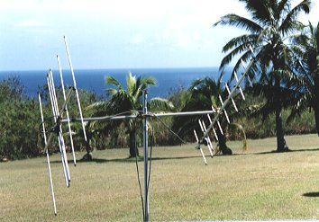
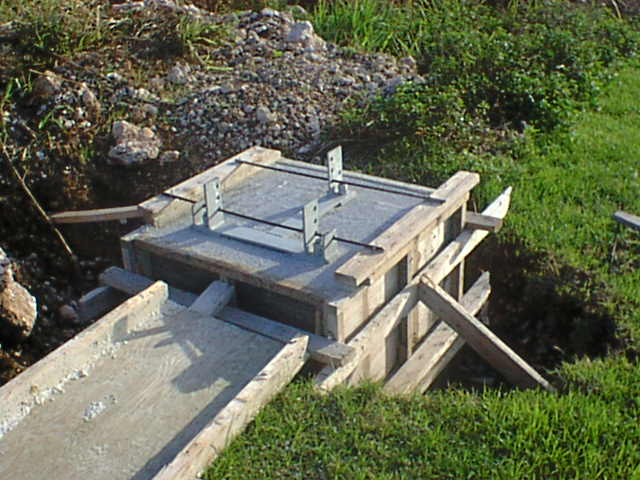
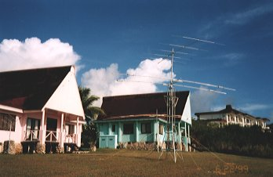

|
【サイパンからの運用】
サイパン訪問は今年になってから2度目、2月8日以来でした。
2年前の1997年7月に八重洲無線とTABIX世田谷旅行倶楽部の協力でサイパン島に「レンタル・シャック」が開設されて以来、
通算すると5回目になります。今回の滞在は6月21日から24日までの4日間。
到着した21日の午前中は、まだ前のグループが「シャック」に滞在中でしたので、午後まで時間待ち。
午後2時頃に「シャック」に移動、さっそくアンテナ建てを開始しました。
真っ先に上げた6mでは早くもJAが入感しています。今回が初めての訪問となるJI1UHZ・丸野さんに6mの運用を任せ、
他のメンバーは引き続きHFアンテナの準備。
HF帯アンテナに続いて今回初めて運用するサテライトのアンテナの組み立てです。
 "組み立て"と言っても、144MHz=5el、430MHz=10elと"オモチャ"の様な小さなアンテナなので室内で作業は完了です。
"組み立て"と言っても、144MHz=5el、430MHz=10elと"オモチャ"の様な小さなアンテナなので室内で作業は完了です。
さっそく衛星(AO-10)の方向を見定めてアンテナを固定するとVK2ZREなどが聞こえていました。
今回は22日の午後にJN1WTK・黒崎さんの運用でJA1ADN、JA5LGの2局のJAとQSO出来ました。
今までこの場所からサテライトを運用したことが無かったのですがたまたまAO-10が良く動作しているのを知り、
急遽、出発の前日に小型の144/430MHzのアンテナを購入、持参する事にしたのでした。
シャックには「サテライト専用機」としても実績のあるFT-847も用意されていて、
アンテナさえあれば何時でも144/430MHz帯に出られる状態でした。
この日の6mは50数局QSOしたところでJAはフェードアウト。
今日は信号も弱いため全てCWでのQSOでした。

↑6mを運用するKH0/JI1UHZサテライト用の145/435MHzアンテナ→
1997年に「レンタル・シャック」が設置されてからこの2年間に多くのJA局がこのシャックから運用、
サイパンは太平洋地域では最もアクティブに運用している"カントリー"になっています。
HF帯では既に"雑魚"になっているはずの"サイパン"ですが、運用する度に大きなパイルアップを経験出来ます。
特にヨーロッパからのWARCバンドの要求度は高く、コンデションが続く限りパイルアップは途切れることはありません。
今回も6mとHF帯はWARCバンドを中心に運用しました。
【インターネットで情報提供】
今回はサイパンのシャックから"運用状況"をインターネットのホームページに「KH2K/AHφ サイパンレンタルシャック・リアルタイムレポート」
として情報を提供しました。
クラスターへのリポートは以前にも行っていましたが、まとまった情報提供は今回が初の試みでした。
【レンタル・シャック グレードアップ】
「レンタル・シャック」を利用する時は利用者(運用者)が現地に到着した後にタワー建設からアンテナの組み立て、
リグの設置までを行う事になっています。
グループで大勢出掛ける時にはアンテナの設置などもさほど負担にはならないものの、
少人数の時にはやはり全てを設置するまでにはかなりの時間を要します。
この負担を少しでも軽減させる目的で、恒久的なタワーの設置を以前から検討していました。
最近、コテージを所有するマリアナリゾート・ホテル側との話し合いの結果、
条件付きながらタワーの設置許可の内諾も貰いました。
今回の訪問の目的は、このタワー設置のための関係者との打ち合わせと"建設"の立ち合いでした。
計画を進めるに当たって、台風の通り道(発生場所？)でもあるサイパンでは、
日本のように高いアンテナを立てることは危険なので高さも10m程度として、
作業性も考えクランクアップ・タワー方式にするなど、安全第一に考えました。
設置するクランクアップ・タワーは、台風が来襲したときに備えてタワーごと倒せる構造の物を米国から購入しました。
【政府の認可】
タワーの設置場所は広大なホテルの敷地の片隅を使用するだけなので、ホテルの許可でOKと考えたのですが、
これはチョット甘かった様です。
サイパンでは個人の敷地内とはいえ構造物を建てるのは「政府の許可」が必要とのこと。
即日建設工事に取りかかれるものと考えていたのは大きな間違いでした。
改めてホテル専属の業者にお願いして"役所"に提出する申請書類作りから始めることになりました。
書類はかなり詳細なもので、設置場所の地図(サイパン島全体の地図から、設置する場所の見取り図など数枚)、
設置の目的、使用目的、申請者の氏名、使用者(無線従事者)の氏名及び免許証のコピー等々...
最初からこれだけの書類の提出が必要と判っていたら、タワー設置など考えなかったかも知れません？。
今回は予定していたタワーの建設は出来ませんでしたが、サイパンを離れる直前に最終書類にサインをして、
許可待ちの状態で帰国出来ました。
帰国後に現地から届いた報告では、無事に許可も下り、既に基礎工事も終わっているとの事でした。
これからは重いタワー(4.0mのルーフタワー)を持ち運ぶ事もなく、アンテナ工事も短縮される事でしょう。


タワーの基礎工事／レンタル・シャックのコテージ。青色の建物の右側にタワーが建つ
【運用を終えて】
タワー工事が延期になり、今回もほとんどの時間を"運用"に当てる事が出来ました。
6mのQSO数は少なかったものの、HF帯ではヨーロッパとのQSOを堪能しました。
今回の様に「レンタル・シャック」の利用者が連続して滞在するスケジュールの場合には、
帰国するグループはアンテナ等の撤去をしなくて良いのと、
後続のグループはアンテナ建ての作業が省略できます。
たまたま今回は連絡の手違いで前のグループがアンテナを撤去してしまったため、
全てのアンテナを建て直すことになりましたが、今回は"シャックのメンテナンス"も兼ねた訪問でしたので、
逆にアンテナ類の"点検"が出来、好都合でした。
全てのアンテナは正常に動作してしていることが確認出来、機械(RIG)類も正常でした。
利用者には、初めて使用するアンテナもあり、組み立てやリグの操作に慣れていないため「動作不良」と考えてしまう事もある様です。
短い滞在期間で習熟するのは無理とは思いますが、説明書が完備していますので一通り目を通すことをお薦めします。
【KH2K/AHφ & JA1RJU・小笠原 一夫】
|